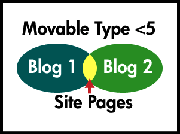
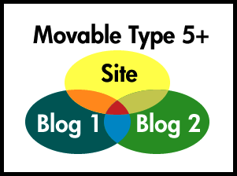

Movable Type 5
Movable Type 5 came out recently. I know you care. In reality, you probably didn't notice, but I figure that I'm as qualified as anybody else to give a review of the CMS which powers my site. From my limited experience, here are the key changes or additions to Movable Type 5:
- Sites
- Revision History
- Dashboard
I'll set out right now what type of site I personally host - I am a one author, multi-blog content sharing, action streaming, stat-tracking, lessn-shortening, non-asset managing, non-user registering, funky content incorporating site. I'm writing about me. I know what a handful of other people do/use on their installations of Movable Type - because they've told me, I've figured it out, or, I built their site. If you're into this sort of thing, or have any interest - read on. Otherwise, I feel no offense at you going on to the next item in your feed reader. I'll soon return to some long overdue pictures of my kids in the next post and I won't talk about our car accident (very much). I promise.
Movable Type 5 threw a giant wrench in my site. I'm not kidding. The largest issue was the implementation of sites in MT5. Let's take a look at how things worked before:

My site (like others) houses multiple blogs. Previously one of those blogs acted like the website's home. Any multi-blog pages you created, or any non-blog content you wanted to host (like a portfolio, or contact page), technically belonged to a blog (either one, it didn't matter). Previously that was the only way to do it, so things worked out just fine. Let's look at the new style:

The new setup requires that each blog belong to a website (which is technically (if you peek at the database) another blog). Additionally the website and each blog has a theme and a style (think of the theme as the layout, and the style as the coloring). MT then really wants you to host your blogs in a sub-directory of the website, for its own anal-retentive purposes. Well since your blog just got moved to a sub-directory, and all of your extra content got moved there as well. Additionally, the website doesn't automatically pull/compile from the blogs that belong to it (which I think is stupid), so you'll need to adjust your templates to utilize the blog_id parameter.
“Well, what about the publish path?” Good question, but that path is relative to the path of the blog. If you're a one-blog site, maybe you'll still be lucky enough to just use the root of your site (I wasn't).
Any pages that are multi-blog or general site pages should probably be moved off the blog and onto the site. While you're at it, it might be good to have your site and blogs look similar-ish so you don't confuse any visitors - “How come this blog looks nothing like the home page of the site that's hosting it?” Similar-ish.
With all the changes, you'll be glad to have the next overdue implementation - revision history. MT5 brings in a full revision history for any page-related content; both templates and entries are impacted. This is a fabulous feature and came in very handy during my upgrade. With the added bonus of being able to make change notes for each revision you can easily go back and see what changed without hunting through the code.
Prior to the upgrade, I was using a modified version of Jim Ramsey's beautiful template set - Mid-Century. The template set didn't work with MT5 for whatever reason, and I was okay with changing. Unfortunately when you change template sets it likes to ~~delete~~ archive all your old templates. Thankfully this revision history was there, and I could easily go back and see my old templates, so I could steal all the code I needed.
The organization of the content is a little different than what I was used to. MT4's dashboard and navigation was all based on menus that ran along the top. I've used WordPress, but can hardly act like I've spent more than 10 minutes clicking around trying to figure out how to use it (I didn't care for it, but I imagine it has its benefits). Some people seem to be incensed at MT5's dashboard and its similarities to WordPress. Due to my lack of remembering or caring if it looks the same, I can neither confirm nor deny those claims; I can confirm my own opinion that it's a little weird, and less helpful than the previous auto-dropdown menu style was. You now need an extra click to potentially get to the content/setting you want. That's too bad.
I admit it – I have quite a few customizations that most people probably don't notice or care about. I spent way too much time fixing my site. With the changed template set, a new theme/style (which still needs lots of love/adaptation before I can actually like it), shifting the charts to their own blog, fixing my action stream (which isn't included, nor officially functional with MT5 (but thanks to a kind Japanese user has been modified to work)), getting my entries to appear across my whole site, getting my analytics/stats tracking working, getting my shortened urls working (if you visit the site, you'll see a little # that is an automatically shortened url to this entry) again, rebuilding my custom pages with the new theme/style, finally ditching my previous home-brewed site search in favor of MT's built in search (which I discovered sucks)... with all of those changes/updates as well as a handful of other small things - it was a painful couple of days. I think I'm glad I did it, since there are still several features I'd like to implement, but it was one of the most painful upgrades I've gone through. Luckily it was my own site, so I didn't have the added pressure of a client justifiably panicked that their site was down/unavailable/fuglified. I know there has to be a better way to do full upgrades of your CMS to a newer/better version.
My upgrade advice? 4.33 worked very well as-is (and so did 3.x). I honestly don't know if I see the full benefit of MT5 yet. They might claim it rebuilds faster, or has better template tags, or cooler specs on the rotary girder... but it doesn't really seem like it's worth all the work I put into it. Stay with what you're using unless you want to do a complete site overhaul; that would be a perfect time to implement MT5.
Prior: Messing with My Head Next: G2 20100319